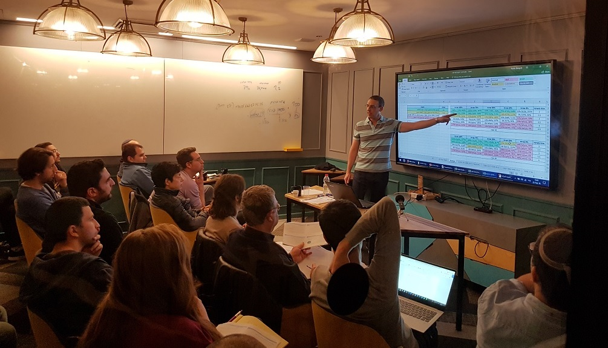
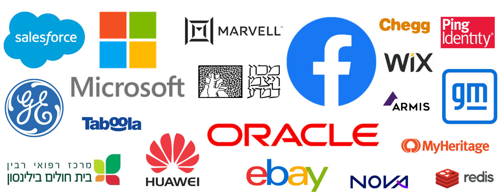

אנו מציעים קורסים, הרצאות וסדנאות להשכלה פיננסית*, המועברים כקורסים פרונטליים בחברות, בחוגי בית ולקהל הרחב, וכקורסים דיגיטליים. כמו-כן, אנו מציעים הדרכות פרטיות ומותאמות אישית וכן תכנון פיננסי אישי/משפחתי. השירותים שלנו מתחלקים ל-3 מרכיבים עיקריים, לחצו לפרטים:
- הדרכות פרטיות ותכנון פיננסי מותאם אישית
- הרצאות וסדנאות פרטיות לחברות ולקבוצות

לתיאום, שאלות וקבלת הצעת מחיר צרו איתנו קשר
קורס החירות הפיננסית
1. קורס החירות הפיננסית הוא קורס הדגל של Simplifynance, בהיקף של 11 שעות לימוד. מדובר בקורס היחיד בישראל שמלמד: מה באמת עובד לאורך זמן ע"ס נתונים ומחקרים סטטיסטיים ארוכי טווח, כיצד להגדיר כראוי מטרות להשקעה, כיצד לבנות בקלות ובמינימום זמן תיק השקעות פאסיבי ורווחי בהלימה למטרות שהגדרנו, בחינת כדאיות השקעה בנדל"ן והשוואה מספרית מול שוק ההון, כיצד למזער עלויות ולחסוך במס, וכיצד להפיק את המיטב מחשבונות החיסכון שלנו (קופת גמל, קרן פנסיה וקרן השתלמות). הקורס מקנה את כל הבהירות הדרושה בתחום ההשקעות וחשבונות החיסכון, ומספק מדריך פרקטי צעד-אחר-צעד להוצאה לפועל של כל העקרונות שנלמדו בו.
הדרכות פרטיות ותכנון פיננסי מותאם אישית
2. תכנון פיננסי אישי - תהליך חשיבה ותכנון שאורך פגישה אחת עד 3 פגישות, בסיומו תהיה ללקוח ביד תכנית מפורטת לחסכונותיו והשקעותיו, וכן צ'ק ליסט ברור למימוש התכנית בקלות. התהליך כולל מיפוי של כל הנכסים הקיימים (חסכונות פרטיים, פנסיה/גמל/השתלמות, נכסי נדל"ן וכיוצ"ב), הגדרת יעדים ומטרות ברורים לחסכונותיו ברמה האישית/המשפחתית לעתיד הקרוב והרחוק, תכנון פרישה וירושה (אם רלוונטי), ובניית תכנית השקעות אופטימלית ופשוטה ליישום שמטרתה לספק מקסימום תשואה בהלימה למטרות, וכן לספק שקט נפשי ללא חשש מתנאי השוק המשתנים.
3. ליווי טכני - מדובר ב-session קצר יחסית בו לקוחות שכבר יש להם תכנית מפורטת מקבלים סיוע למימוש התכנית בפועל - איתור ורכישה של ניירות ערך, העברת הוראות קניה בבית ההשקעות, וידוא תקינות התנאים וההגדרות, וכיוצ"ב. ניתן לבצע את התהליך גם בפגישה וגם בשיחה טלפונית וחיבור מרחוק למחשב הלקוח.
4. התייעצות טלפונית - מיועדת למי שכבר מצויים בשליטה על חסכונותיהם והשקעותיהם, בין אם לקוחות/תלמידי עבר של Simplifynance או בעלי ידע וניסיון אישי, אשר מעוניינים בחידוד נקודות ספציפיות וסיוע ממוקד בנושאים שאינם ברורים להם עד הסוף. במסגרת ההתייעצות הטלפונית ניתן לבצע חיבור מרחוק למחשב לשם מעבר משוטף על חומרים, תיק ההשקעות וכיוצ"ב.
לתיאום, שאלות וקבלת הצעת מחיר צרו איתנו קשר
הרצאות וסדנאות פרטיות לחברות ולקבוצות
בין החברות בהן העברנו את ההרצאות, הסדנאות והקורסים שלנו ניתן למנות את:

5. הרצאת העשרה בנושא "השקעות - מיתוסים, סיכונים ומה ניתן ללמוד ממחקרים ארוכי טווח". ניתן להזמין הרצאה במשך זמן לבחירתכם – הרצאות קצרות לכנסים מרובי דוברים (15 דק', 30 דק', 45 דק') והרצאות ארוכות יותר לחברות, ארגונים וחוגי בית (60 דק' ו-90 דק'). ההרצאה מעניינת מאוד, אך היא אינה רק תיאורטית - שומעיה יפיקו ממנה ערך רב אותו יוכלו ליישם באופן מיידי.
תקציר ההרצאה: תחום הפיננסים וההשקעות עשוי להיראות מאיים, אך ממש לא מדובר במדע טילים. למעשה, יש רק מס' קטן של עקרונות ונתונים שחשוב להכיר כדי להצליח בהשקעותינו ולקבל החלטות מושכלות. בהרצאה אנו נכיר את העקרונות הללו: נלמד את הסיכונים בהשקעות וכיצד להתגונן בפניהם, נבין מה עובד ומה לא עובד ע"ס נתונים סטטיסטיים ארוכי טווח, ונבין כיצד למזער עלויות ולמקסם תשואה מבלי לחשוש מתנאי השוק המשתנים.
"ההרצאה של רונן הייתה מרתקת! היא מועברת בצורה ברורה, מדוייקת ומלאת דוגמאות, והופכת נושאים שנתפסים כמורכבים לכאלה שכל אחד יכול להבין. לטעמי הרצאת חובה!"
זיו לוי, מנכ"ל ומייסד חברת Arilou (נרכשה ע"י NNG)
"ההרצאה של רונן היתה מעניינת ומעשירה. רונן הצליח גם לסקרן את הקהל וגם לייצר חוויה".
יובל כץ, מנהל משאבי אנוש בחברת טאבולה
"נרשמתי לקורס בעקבות הרצאה מרתקת שרונן העביר אצלנו בחברה בנושא השקעות. ללא ספק אחת ההחלטות הטובות ביותר שקיבלתי! רונן מרצה מצוין, בעל ידע ובקיאות יוצאת דופן והתייחס לכל שאלה ברצינות ובסבלנות".
רותם אדחוח, DBA בחברת טאבולה
6. הסדנא המזורזת להשקעות וחשבונות חיסכון – סדנא בהיקף של 3 שעות לימוד המהווה הרחבה של ההרצאה שלעיל. אחרי שנבין את כל מה שחשוב לדעת על השקעות מתוך נתונים ומחקרים ארוכי טווח, נלמד כיצד ליישם את המסקנות הן בחשבון ההשקעות הפרטי שלנו והן בחשבונות החיסכון ה"מיוחדים" – קופת גמל, קרן פנסיה, קרן השתלמות. הסדנא תלמד כיצד להפיק מחשבונות אלו את המיטב בכל שלב בחיים, בהיבטי התשואה והכיסוי הביטוחי, תוך חשיבה מחוץ לקופסא ובאמצעות ניצול תקנות ואפשרויות מיוחדות ועדכניות שרבים מהסוכנים הפנסיוניים כלל לא מודעים לקיומן. הסדנא מיועדת בעיקר לחברות, לארגונים ולחוגי בית.
"בתור מישהו שחי את שוק ההון ושמאוד רוצה לעזור לעובדים שלו לקחת פיקוד על הכסף שלהם, היה לי מאוד חשוב להביא לחברה בן אדם שאני סומך עליו ושבאמת מבין ורואה את העולם מהזווית שלי. רונן נתן הרצאה מדהימה ומדויקת להפליא בדיוק על הדברים שחשוב לדעת בעולם ההשקעות והפנסיה".
רון רייטר, מנהל פיתוח ומייסד חברת Crosswise (נרכשה ע"י Oracle)
7. סדנת ערך הכסף - כדי להפיק תשואה מהשקעות צריך לחסוך, רק כך יהיה לנו מספיק הון שיוכל לעבוד בשבילנו. השיטות המקובלות להגדלת החיסכון, שכוללות בניית תקציב משפחתי, מעקב הדוק וויתור על גחמות רגעיות, לרוב לא מחזיקות מעמד. בדומה לדיאטות וספירת קלוריות, אחרי זמן מה של הצלחה נחוש תחושת הקרבה ונחזור להרגלינו הקודמים. כדי להצליח באמת לשנות הרגלים, נדרש להטמיע שינוי תפיסתי ביחס שלנו לכסף ולאופן בחירת ההוצאות שלנו. סדנא מעשית קצרה זו (בהיקף של כשעה) תשנה באופן פונדמנטלי את אופן ההסתכלות שלנו על הוצאות, בין היתר ע"י בחינת העלות האמיתית שלהן, אותה יש למדוד לא בערך כספי אלא במשאב הכי יקר שלנו – זמן חיים. יישום עקרונות הסדנא יאפשר הבחנה בקלות בין הוצאות שטובות עבורנו לכאלה שניתן לוותר עליהן, להחזרת השליטה על כספנו, ולצמצום חד בהוצאות השוטפות מבלי לחוש פספוס והקרבה.
8. סדנת עצמאות פיננסית - סדנא המיועדת הן לעומדים בפני פרישה לגמלאות והן לאלו ששוקלים לפרוש צעירים ממרוץ העכברים. בסדנא קצרה זו (בהיקף של כשעה) תלמדו לכמה הון תזדקקו כדי להגיע לעצמאות פיננסית, בה עבודה תהפוך לבחירה ולא להכרח, כיצד לבנות תיק פרישה מאוזן ולהתקיים ממנו, ומהו שיעור המשיכה הבטוח שיאפשר את שרידות התיק לאורך שנים רבות, ואף את הגדלתו לטובת יורשיכם.
9. הרצאות וסדנאות נוספות - ניתן להזמין הרצאות, סדנאות ומיני-קורסים מותאמים אישית לפי הפרקים המופיעים בסילבוס הקורס. להתרשמות מהאפשרויות המוצעות, לחצו כאן, ובכל מקרה ניתן להרכיב קורס/סדנא בהתאמה אישית. אם תרצו, תוכלו גם לרכוש את הקורס הדיגיטלי או כל אחד מהמיני-קורסים המוצעים כדי להתרשם מהתכנים, ובמידה ותזמינו קורס/הרצאה/סדנא לחברה תקוזז עלות הרכישה.
לתיאום, שאלות וקבלת הצעת מחיר צרו איתנו קשר
* השירותים המוצעים הינם לימודיים במהותם ואין לראות בהם תחליף לייעוץ השקעות ו/או ייעוץ פנסיוני.
לתנאי השימוש ומדיניות הפרטיות לחץ/י כאן